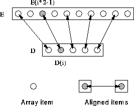

Align each element of D with every second element of E:
REAL, DIMENSION(5) :: D
REAL, DIMENSION(10) :: E
!HPF$ ALIGN D(:) WITH E(1::2)
Here, D(1) is aligned with E(1),
D(2) is aligned with E(3), D(3) with E(5) and so
on. This form of strided alignment is specified using the subscript-triplet
(or colon) notation. Effectively, this says:  i, elements
D(i) and E(i*2-1) are aligned.
i, elements
D(i) and E(i*2-1) are aligned.
This alignment could also be written:
!HPF$ ALIGN D(i) WITH E(i*2-1)
These alignments may be visualised as in Figure 28.

Figure 28: Visualisation of Strided Alignment
This alignment is suitable for,
D = D + E(::2) ! All local